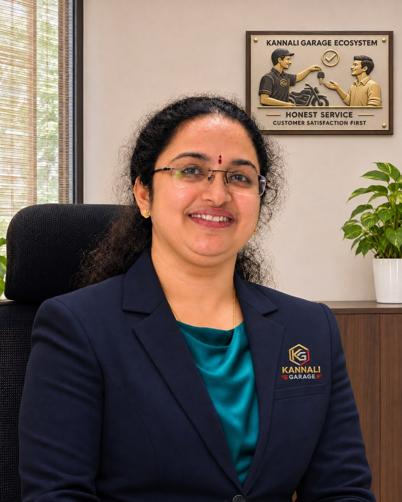

Real-world automotive experience. A connected technology vision.
KANNALI Garage is an automotive service business in Whitefield, Bengaluru, developing technology products for the two-wheeler service and spare-parts ecosystem.
Our mission
To improve transparency, coordination and accessibility in motorcycle service and spare-parts procurement through practical workshop expertise and connected digital tools.
Our operational workshop provides the foundation for understanding customer needs, garage workflows and the challenges of sourcing parts.
What we do today
- Operate a multi-brand motorcycle service workshop in Whitefield
- Provide servicing, repairs and spare-parts support
- Develop SpareX B2C and B2B parts-commerce applications
- Develop GarageOS workshop-management workflows

Building trust in every service. Creating connections through technology.
“At KANNALI Garage, our journey begins with a simple commitment: every customer deserves honest advice, transparent service and dependable support. Our experience in motorcycle servicing has shown us how much better the ownership experience can be when customers, garages and spare-parts businesses work together.
Through SpareX and GarageOS, we are working to bring that vision into a connected digital ecosystem. We are building thoughtfully, testing carefully and keeping trust at the centre of every decision.
Thank you for being part of our journey.”
Our current business and product stages
The workshop is operational. The SpareX and GarageOS digital platforms are in development and undergoing integration work. We do not represent unfinished features as publicly available.